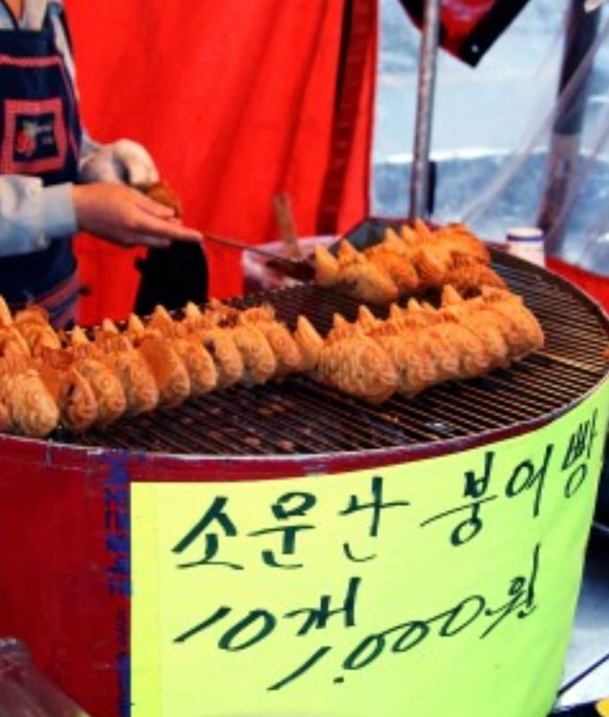

다시는 오지않을 붕어빵 1개 100원 시대

다시는 오지않을 붕어빵 1개 100원 시대
20년 전도 기본은 4개 천원이었잖아ㅋㅋㅋㅋ
어묵도 하나에 천원이 돼부렀어
김종구 부산어묵
우리집근처에 아직 5개 천원인곳은있음

근데 가족들이 아무리싸도 너무맛없다고 걍 사오지말라함 ㅋㅋ
싼건 다 이유가 있지
ㅋㅋㅋㅋㅋㅋㅋㅋ
엥 십년전에도 저 가격이면 놀랍도록 싼 축인거 같은데
근데 붕어빵이 맛이 없었음 당연히 단가 생각하면 팔아주셔서 감사합니다 였지만 ㅋㅋㅋ
이제 1000원에 한개아님?
부천역근처에 아직 3개에 천원이긴함..근데 근처 조금이라도 벗어나면 2000원에 3개 ㅇㅈㄹ남
20년전에도저 가격이니까 사진이 찍히지않았을까?
20~23년전 가격이 4개 천원 이랬음
20년전 우리동네에 천원 10마리 딱 한곳 있었고 5마리 천원, 4마리 천원이 공존했음 ㅋㅋ
나 초딩때 3개 천원이었던걸로 기억
내 기준으로는 3개 천원 시절에 머무르는중
저때도 세개 네개 천원이었음 ㅇㅇ
우리동네 3개에 천원인데 진짜 혜자야
내 기억속 국화빵은 한개 백원이었는데 요새 1000원에 4개드라
밀가루 해처먹은거 환수는 둘째치고 원복도 못하는 병신같은 나라
붕어빵 아직도 4~5개 천원 하는곳 있긴하던데
거긴 진짜 붕어빵이더라...
우리가 평소에 붕어빵이라 부르는게
사실은 잉어빵이였다는걸 깨닫게됨.
그냥 붕어빵은 뭐랄까... 풀빵 같은 느낌임;;;
반죽도 다르고 팥소도 좀 다름 맛없음...
집근처는 3개 2천원하더라 ㅠㅠ
저때도 싼 곳이었던거같은데
붕어빵 저점매수해서 10년존버했어야
메로나 100원일 때, 200원일 때를 살았는데 당연히 오지 않지 뭔 헛소리여.
집근처 1개 천원에 파는데 줄서서 먹더라...
난 그돈주곤 절대 못먹겠든디
저거 대전역같은데? 대전역 붕어빵맞으면 저거 100원이라해도 돈주고 먹을게못됨 그냥 밀가루반죽구이라고 생각하면됨
3개 2천원이면 뭐 그냥저냥 먹음 한개에 700원 꼴이니까
솔직히 3개 2천원이면 아무 불만 없음. 겨울에 서서 시간당 한 20개 팔아야 2만원인데 뭐
초1때 팥붕 초코붕 프랑크소시지붕 팔았는데 요즘은 팥아니면 슈붕이라 다시 그 맛을 찾을수가없음ㅠ
내 기억에 제일 오래된 붕어빵 가격이 2000년대 초반 5마리 1000원이었는데 10마리 1000원은 언제적임?
맞아 5개 1천. 어느 지역이건 비슷했음.
겨울철 쾌락의 끝은 이불덮고 TV보면서 귤까먹는거임
지금 3개에 2천원 받는거 생각하면ㅋㅋㅋㅋㅋㅠㅠ